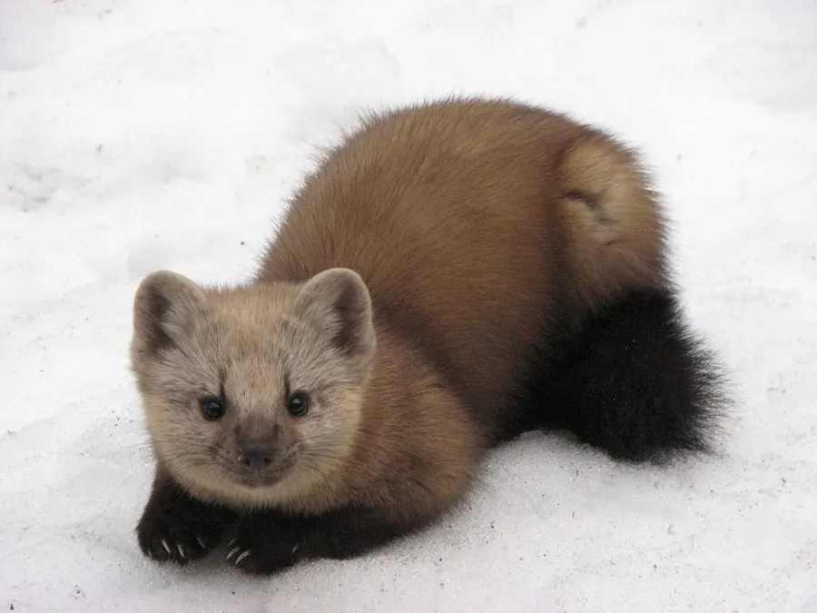

哺乳动物 · 动物界
紫貂 Martes zibellina

东北亚针叶林中的小型鼬科动物，皮毛致密柔软、喉部有浅色斑块，善攀树，是著名的毛皮兽，中国一级保护动物。
- 分类
- 门脊索动物门纲哺乳纲目食肉目科鼬科属貂属
- 栖息环境
- 针叶林、泰加林与混交林，偏好冷杉、云杉占优的密林
- 地理分布
- 俄罗斯西伯利亚、中国东北、蒙古和朝鲜半岛北部
- 保护级别
- IUCN 无危（LC）；中国国家一级保护动物
物种志
紫貂体长 0.32–0.53 米，尾长 0.15–0.23 米，体重 0.7–1.8 kg，雄性略大。它的身体细长，四肢短小，爪尖可半伸缩，便于攀树；被毛为黑褐至黄褐色，颈部和喉部有浅黄色或橙色斑块，冬季毛被更厚密柔软。
紫貂分布于俄罗斯西伯利亚、中国东北、蒙古和朝鲜半岛北部的针叶林，栖息于泰加林、山地针叶林和混交林，尤其喜欢冷杉、云杉占优势的密林。它是树栖性较强的鼬科动物，善攀爬，捕食松鼠、鼠类、鸟类、鸟蛋，也吃果实和昆虫。紫貂多在晨昏和夜间活动，以气味标记领地，冬季不冬眠。雌兽有延迟着床现象，妊娠期约 250–300 天，每胎 1–4 仔。因其毛皮被称为“软黄金”，历史上遭到大量猎捕，中国将其列为国家一级保护动物。
形态与习性
- 食性松鼠、鼠类、鸟类、鸟蛋，也吃果实和昆虫
- 体长0.32–0.53 m，尾长 0.15–0.23 m
- 体重0.7–1.8 kg，雄性略大
- 寿命野外约 8–15 年
- 繁殖有延迟着床，妊娠期约 250–300 天，每胎 1–4 仔
- 毛皮冬季毛被厚密柔软，喉部有浅色斑块
- 树栖爪可半伸缩，善于攀爬树木
趣味知识
- 紫貂的毛皮被称为“软黄金”，曾是东北三宝之一。
- 它善于攀树，能在树间追逐松鼠等猎物。
- 紫貂有延迟着床现象，胚胎可暂缓着床发育。
- 中国野生紫貂数量稀少，被列为国家一级保护动物。